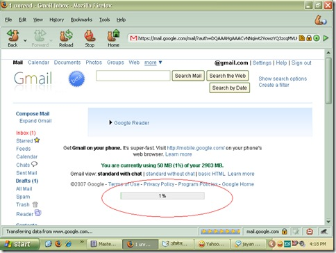

एक बार इन तस्वीरों को जरूर देखिये।
कल आपको जीमेल को बेहतर बनाने की विधी सिखाई थी। आज पता चला कि जीमेल ने अपना नया संसकरण जारी किया है। जो सिर्फ फॉयरफॉक्स के लिये ही बना है। यानि IE के प्रशंषक जीमेल के इस उसके नये और ढ़ेर सारी सुविधाओं वाले संसकरण का लाभ नहीं उठा पायेंगे।
आईये तस्वीरों के माध्यम से देखते हैं कि नये जीमेल में क्या क्या सुविधायें है।

तस्वीर क्रमांक १ सुन्दर मुख्य पृष्ठ


तस्वीर क्रमांक २ और ३ जीमेल में फीड एग्रीग्रेटर अपने पसंदीदा चिठ्ठों का ध्यान रखे, बिना एग्रीग्रेटर खोले। आपको स्वत: ही पता चल जायेगा कि आज आपके किस प्रिय चिठ्ठाकार ने कौनसी प्रविष्टी लिखी है।

तस्वीर क्रमांक ४- अटेचमेन्ट का प्रारूप- बड़ा आईकॉन जिसे बदल कर छोटा भी किया जा सकता है।

तस्वीर क्रमांक ५ - जीमेल में गूगल कलैण्डर अपने मित्रों और चाहने वालों के जन्मदिन और विवाह की वर्षगांठ याद रखने का काम जीमेल पर छोड़ दीजिये।
और
तस्वीर क्रमांक ६ एक्सपन्डेड मोड : जिसमें आपकी सारी मेल छुप जाती है और जीमेल का होमपेज जैसे दिखने लगता है, लाल घेरे में देखिये आपके जीमेल का हिसाब किताब नये रूप में । 

इसके अलावा ढ़ेरों सुविधायें जीमेल ने अपने इस नये संसकर्ण में दी है
क्या आप अपने जीमेल को नये में बदलना चाहेंगे..............?